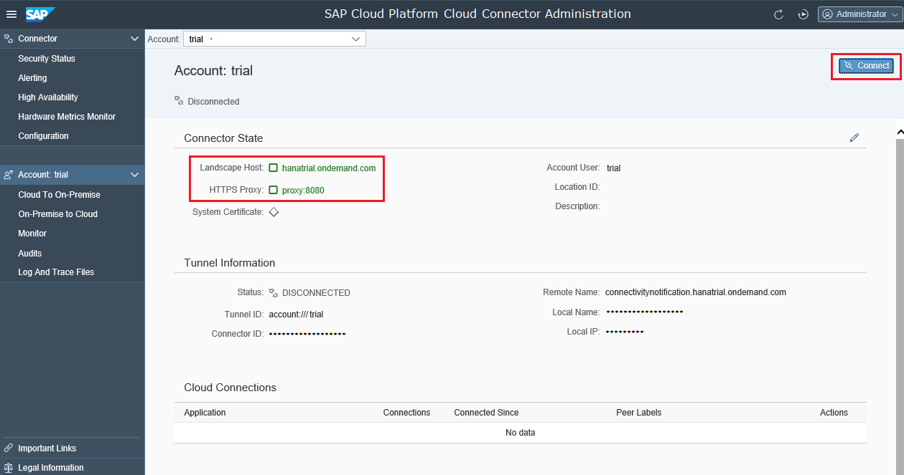

Initial Configuration
Once the Cloud connector has been installed and the Cloud connector daemon has been started, you can log on and perform the necessary customization to make your Cloud connector operational. To do this, follow the procedure below.
Go through the following steps:
We strongly recommend that you read and follow the steps described in Recommendations for Secure Setup. For operating the Cloud connector securely, see also Guidelines for Secure Operation of Cloud connector.
To administer the Cloud connector, you need a Web browser. To check the list of supported browsers, go to Product Prerequisites and Restrictions → section "Browser Support".
- In a Web browser, enter:
https://<hostname>:<port>
- <hostname> refers to the machine on which the Cloud connector has been installed. If installed on your machine, you can enter localhost.
- <port> is the Cloud connector port specified during installation (default port is 8443).
- On the login screen, enter Administrator / manage (case sensitive) for User Name / Password.
- When you first log in, you must change the password before you continue forwards, regardless of the installation type you have chosen.
- Choose between master and shadow installation. Use Master
if you are installing a single Cloud connector
instance or a main instance from a pair of Cloud connector
instances. For more information, see Installing a Failover Instance for High Availability.

- You can edit the password for the Administrator user from Configuration in the main menu, tab , section Authentication: User Interface
Window Set Up Initial Configuration is displayed.
If your internal landscape is protected by a firewall that blocks any outgoing TCP traffic, you need to specify an HTTPS proxy that the Cloud connector can use to connect to SAP Cloud Platform. Normally, you would need to use the same proxy settings as those being used by your standard Web browser. The Cloud connector needs this proxy for two operations:
- Downloading the correct connection configuration corresponding to your account ID in SAP Cloud Platform.
- Establishing the SSL tunnel connection from the Cloud connectorUser to your SAP Cloud Platform account.
When you first log on, the Cloud connector collects the following required information:
- For Landscape Host, specify the SAP Cloud Platform landscape that should be used. You can choose the one you need from the dropdown list. For more information, see Landscape Hosts.
- For Account Name, Account User and
Password, enter the values you obtained when you
registered your account on SAP Cloud Platform or add a
new Account User
with role Cloud Connector Admin from the
Members tab in the SAP Cloud Platform cockpit
and use the new user and password..Note If the Cloud connector is installed in an environment that is operated by SAP, SAP will provide a user that you should add as new member in your SAP Cloud Platform account. In this case, please assign the Cloud Connector Admin role (see Account Member Roles) to the user provided by SAP. Once the Cloud connector connection is established, this user is not needed any more since it serves for initial connection setup only. You may revoke the corresponding role assignment then and remove the user from the Members list.
- Optional: You can define a Display Name, which allows you to easily recognize a specific account in the UI compared to the technical Account Name.
- Optional: you can define a Location ID identifying the location of
this Cloud connector for
a specific account. Starting with Cloud connector
release 2.9.0, the location ID is used as routing
information and thus it is possible to connect multiple cloud connectors to a
single account. If not specifying any value for Location ID, the default will be
used, which is representing the behavior of previous Cloud connector
versions. The location ID needs to be unique per account and should be some
identifier that can be used in a URI. In order to route requests to a Cloud connector
with a Location ID, the location ID needs to be configured in the respective
destinations.Note Location IDs provided in older versions of Cloud Connector will be discarded during upgrade to ensure compatibility for existing scenarios.
- Enter a suitable proxy host from your network and the port that is specified for this proxy.
If your network requires an authentication for the proxy, enter a corresponding
proxy user and password. You need to specify a proxy server that supports SSL
communication (a standard HTTP proxy will not suffice). Note These settings strongly depend on your specific network setup. If you need more detailed information, please contact your local system administrator.
- Optional: You can provide a Description (free-text) of the account that will be shown when clicking on the Details icon in the Actions column of the Account Dashboard. It helps you identify the particular Cloud connector you use.
- When you have finished with the settings, choose Save.
The internal network must allow access to the port. Specific configuration for opening the respective port(s) depends on the firewall software used. The default ports are 80 for HTTP and 443 for HTTPS. For RFC communication, you need to open a gateway port (default: 33+<instance number> and an arbitrary message server port. For a connection to a HANA Database (on SAP Cloud Platform) via JDBC, you need to open an arbitrary outbound port in your network. Mail (SMTP) communication is not supported.
-
If you later need to change your proxy settings (for example, because the company firewall rules have changed), choose Configuration from the main menu and go to tab Cloud, section HTTPS Proxy. Some proxy servers require credentials for authentication. In this case, you need to provide the relevant user/password information.
-
If you want to change the description for your cloud connector, choose Configuration from the main menu, go to tab Cloud, section Connector Info and edit the description:
Once the initial setup has been completed successfully, the tunnel to the cloud endpoint is open (even though no requests are allowed to pass until you have completed the Access Control setup). However, you can manually close (and reopen) the connection to SAP Cloud Platform by opening the Connector State page and choosing the Disconnect button (or the Connect button to reconnect to SAP Cloud Platform). The yellow state icon and the text indicate that there is still no resource exposed that could be used from a cloud application. This requires additional configuration, which is mentioned in the Related Information section.
Once the initial setup has been completed successfully, the tunnel to the cloud endpoint is open (even though no requests are allowed to pass until you have completed the access control setup. See Configuring Access Control). However, you can manually close (and reopen) the connection to SAP Cloud Platform by choosing your Account from the main menu and pressing the Disconnect/Connect button. The status no active resources available indicates that additional configuration is required.
